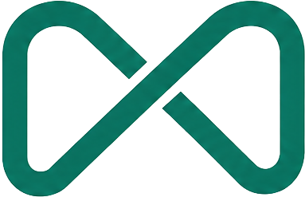

Musubi環境構築ドキュメント紹介報酬マニュアル（運営向け・紹介者向け）
紹介制度の報酬がどう発生し、どう支払うかの実務マニュアル。前半が運営（管理者）向け、後半が紹介者向けの説明。制度の条件は紹介制度規約が正。
PART A. 運営（管理者）向け — 月次の支払いオペレーション
A-1. 仕組みの全体像
- 紹介者は2通りで登録される: ①セルフ登録（https://partner.musubiweb.com — コード即時発行・運営にLINE/メール通知が届く）②財務ページの「紹介報酬」セクションで運営が手動追加（コードは自動発行）。どちらで登録しても扱いは同じ。
- 店舗との紐付けも2通り: ①LP申込フォームの紹介コード欄（
?ref= リンクで自動入力）から自動紐付け ②店舗詳細の「紹介者」selectで手動設定。
- 報酬は自動計算: 紐付いた店舗の月額決済（Stripe入金済みの月額invoice）× 30% を、初回決済月から6ヶ月分。初期費用は対象外。財務ページに常に最新の数字が出る（手計算は一切不要）。
- 紹介成立時（初回月額決済の検知）は、日次バッチが紹介者へ自動でお知らせメールを送る。
A-2. 毎月の作業（月末締め → 翌月末払い）
- 翌月末の支払日前に、財務ページ（/costs）の「紹介報酬」セクションを開く。
- 紹介者ごとの未払残高を確認する。¥5,000未満は「繰越中」表示 — 支払い不要（翌月に繰り越し）。
- ¥5,000以上の紹介者について、表示されている振込先へ残高を振り込む（振込手数料は当社負担）。振込先未登録の場合は紹介者に登録を依頼（/partner の「振込先の登録・変更」から本人が登録できる）。
- 振り込んだら同セクションの支払記録フォームに 金額・支払日 を登録する。登録すると:
- 未払残高が自動で減る
- 紹介者へ「お振込のお知らせ」メールが自動送信される
- 確定報酬は経費として収支・給料計算に自動計上済み（支払記録は現金の動きの記録）
- 以上で完了。件数が増えても手順は同じ。
A-3. 注意点
- 報酬の計算・確定に手作業はない。手で行うのは「振込」と「支払記録の登録」だけ。
- 紹介者を削除すると支払記録も消えるため、取引のあった紹介者は無効化（active OFF）で対応する。
- 業者・法人の紹介者（税理士・卸等）も個人の紹介者と同一制度（月額の30%×6ヶ月）で自動計算される。個別の報酬条件は設けない。
PART B. 紹介者向け — 報酬のしくみ
※ 紹介者に説明するときの想定問答。公開ページは 紹介パートナー営業ガイド（登録パートナー限定・要紹介コード）と 規約。
- いつ報酬が発生する？ — 紹介したお店が契約し、初回の月額決済が完了した月から。その月を含む6ヶ月間、月額利用料の30%が毎月発生します（例: スタンダード月15,000円 → 月4,500円×6ヶ月=27,000円）。
- 発生したらどう分かる？ — 初回決済のタイミングで、登録メールアドレスに自動でお知らせが届きます。
- いつ振り込まれる？ — 月末締め・翌月末払い。振込手数料は当社負担。振込のたびにお知らせメールが届きます。
- 5,000円に満たない月は？ — 翌月以降に繰り越して、合計5,000円以上になった月にまとめてお支払いします（消えません）。
- 振込先を変えたい／登録し忘れた — https://partner.musubiweb.com の「登録済みの方: 振込先の登録・変更」から、紹介コード+登録メールアドレスでいつでも変更できます。
- 紹介したお店が6ヶ月以内に解約したら？ — 解約月の翌月以降の報酬は発生しません（それまでの分はお支払いします）。
- 対象外になるケース — 自己申込、無料期間中の解約、申込時点で既にMusubiと商談中だったお店（規約第4条・第5条）。
💸 社内ドキュメント（環境構築の証跡・手順）。Musubi / local-web-sales プロジェクト。